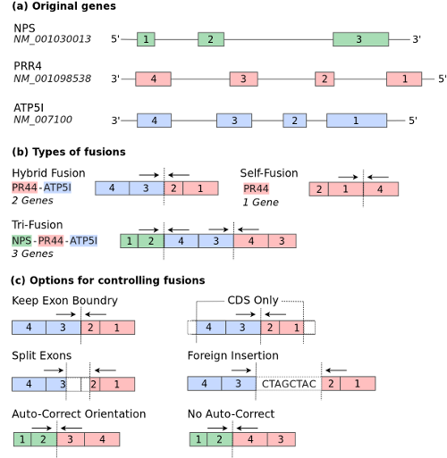

Introduction
FUSIM is a tool for simulating fusion transcripts. Multiple types of fusion transcripts are supported and based on the number of genes involved per fusion, the fusion types are classified as self, hybrid, complex which involves 1, 2, and 3 genes respectively. According to chromosome locations and strand, fusion types are classified as CTX (inter-chromosome events), ITX (intra-chromsome events with different strands), DUP (tandem duplication), and DEL (deletion). Complex chromosomal rearrangements (CCRs) are examples of complex fusions involving at least three breakpoints on two or more chromosomes. Read through events are also supported as a special case of DEL with two adjacent genes on the same strand fused together. See the figure below which shows how fusion transcripts are generated:

User Guide
Basic Usage
- Show all available options:
$ java -jar fusim.jar -h
- Generate fusion transcripts:
$ java -jar fusim.jar --gene-model refFlat.txt --fusions 10
- Output to both FASTA and TXT format:
# Be sure your reference genome is indexed using samtools $ samtools faidx hg19.fa $ java -jar fusim.jar \ --gene-model=refFlat.txt \ --fusions=10 \ --reference=hg19.fa \ --fasta-output=fusions.fasta \ --text-output=fusions.txt
Use background dataset
- Generate Fusion transcripts based on a background dataset (BAM file) using RPKM cutoff of 0.2. Note background BAM files must be indexed (*.bam.bai):
# Be sure to index your BAM file first
$ samtools index myreads.bam
$ java -jar fusim.jar \
--gene-model=refFlat.txt \
--fusions=10 \
--background-reads=myreads.bam \
--rpkm-cutoff=0.2
Filtering Options
- FUSIM has the ability to limit simulated fusion transcript to specific genes or chromosomes of interest. To filter simualted transcripts:
$ java -jar fusim.jar \
--gene-model=refFlat.txt \
--fusions=10 \
--gene1=BCR \
--gene2=ABL1
$ java -jar fusim.jar \
--gene-model=refFlat.txt \
--fusions=10 \
--gene1=BCR,NPS \
--gene2=ABL1,RPL38
Gene Selection Options
| Mode | Method | Options |
| Random (default) | uniform |
-l,--limit Limit all fusions to specific geneId,
transcriptId, or chrom
-1,--gene1 Filter for gene1
-2,--gene2 Filter for gene2
-3,--gene3 Filter for gene3
|
| Background | uniform empirical binned |
-b,--background-reads Path to BAM file containing
background reads. Genes will be
selected for fusions according to
the read profile of the background reads.
-k,--rpkm-cutoff RPKM cutoff when using background
BAM file. Genes below the cutoff
will be ignored
-m,--gene-selection-method Method to use when selecting
genes for fusions
uniform|empirical|binned
-p,--threads Number of threads to spawn when processing
background BAM file
|